バンコク郊外の
ワットプートウドム。
ここもまたタイ屈指の
立体地獄がご自慢のお寺だ。
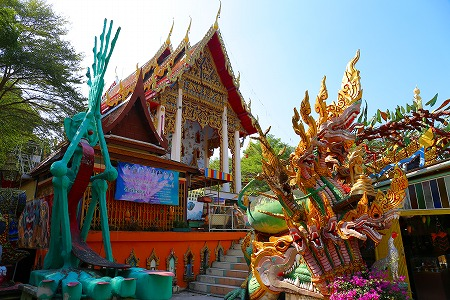
バンコクの表玄関のスワンナプーム空港、裏玄関のドンムアン空港、どちらからも車で１時間ほど。
日本からバンコク入りして
空港から直接車で地獄に直行、という荒行も可能なのである。
勿論路線バスなど(多分）ないので、レンタカーやタクシーなどで足は確保してくださいよ。
ちなみにタイではウーバーよりもグラブが圧倒的に強いので、グラブのアプリもお忘れなく。
で、ワットプートウドムである。
9年ぶりの再訪になる。
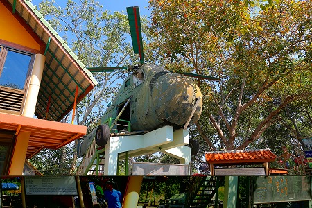
相変わらず境内は
雑多な雰囲気で参拝客も多い。
どこから入手したのか知らないが、本物のヘリコプターがお出迎えしてくれる（操縦席に座れます）。
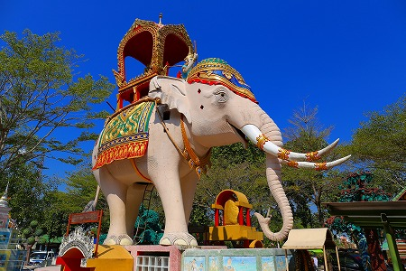
巨大な像もお出迎え（上に登れます）。
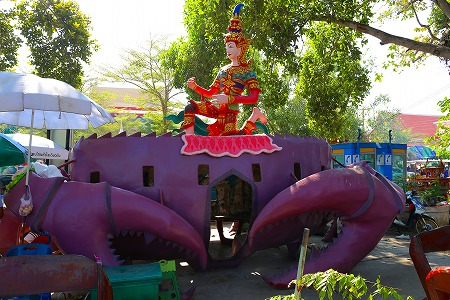
巨大なカニもお出迎え（中に入れます）。
他にも巨大な芋虫や豚や鳥などなど、何をどうしたらいいのか良く判らないオブジェが元気に並んでました。
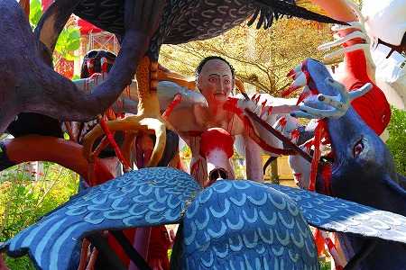
中にはこんなオブジェも。
前回訪問時の時点で壊れていたが、今回もメンテされておらず１０年経っても故障中かよ。
あ、でも色だけは綺麗に塗りなおされていました…。
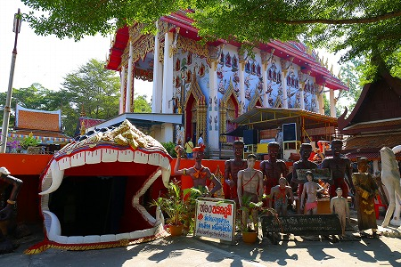
そして本堂の下に大きな口を開けてお待ちしているのが、お待ちかね
地獄コーナー。
階段を下りていくと現れるのは赤いライトに照らされた地獄世界。
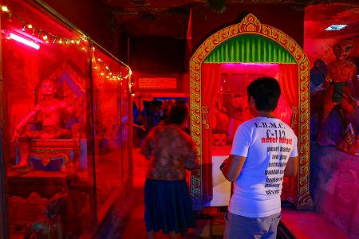
ここの地獄はコインで動くタイプ。
入口で小銭を両替してくれるので、紙幣しか持っていない人もご安心を。
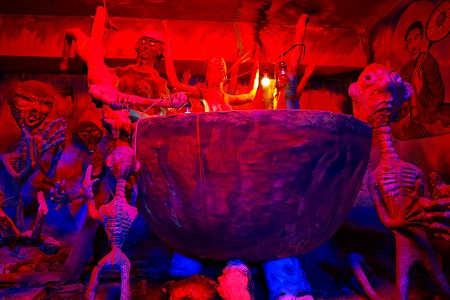
…という訳で大量にコインを仕入れてから地獄めぐりに出発！
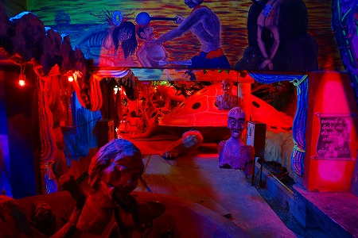
地獄は本堂の真下のスペースを使っているので、そんなに広くはない。
かなり学園祭のお化け屋敷チックな雰囲気だ。
アウトドアでオープンな雰囲気が多いタイの地獄の中では印象的ではある。
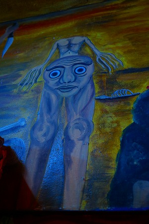
首がなくて体が顔になってる人の変形バージョン。
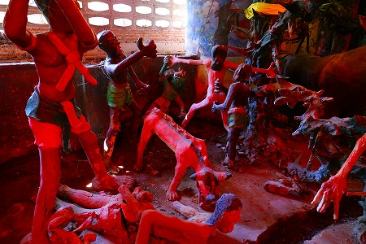
地下、というか厳密には本堂の基壇部にあるので、このように外光が差し込んだりもする。
それはそれでマイペンライなのである。
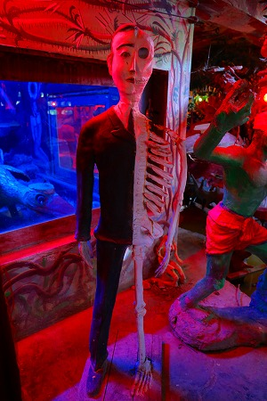 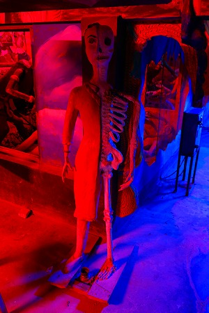
男女がキカイダーみたいになっている。
結構な力作だ。
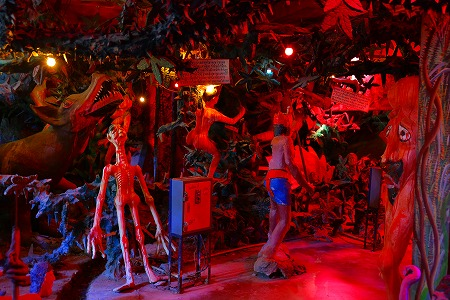
延々と続く立体地獄。
時たまコインを投入する箱があるので入れてみるも、絶叫音がする程度。
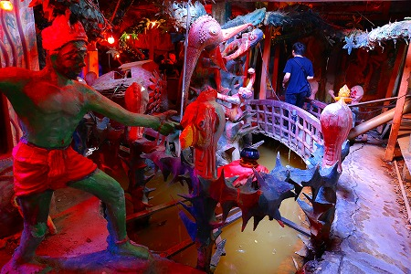
狭い空間ながら、池や橋も設けてある。
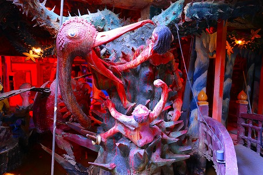
この辺が折り返し地点。
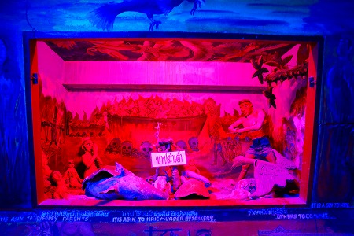
後半戦はやや小さめの地獄が続く。
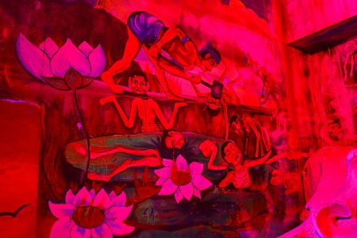
照明のせいで壁の絵も毒々しく見える。いや照明だけの問題ではないが。
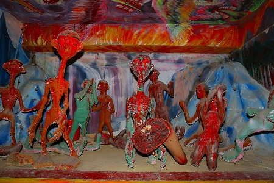
スミマセン、あまりにもライトがきつくて
何を撮っても蜷川実花みたいになっちゃうんで、無粋を承知でフラッシュ焚かせてもらいます。
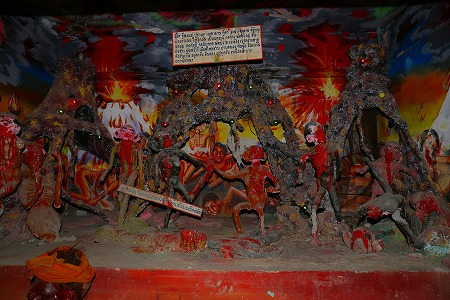
こんな感じ。
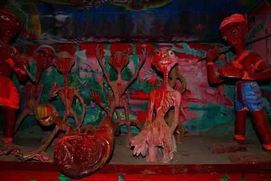
造形的には雑な印象はあるが、それを凌駕する人形の密度だ。
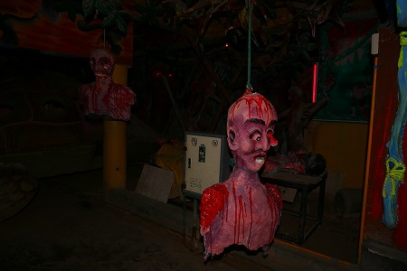
天井からぶら下がっている亡者は
チビッ子のサンドバックになってました…
コインで動くギミックも多数。
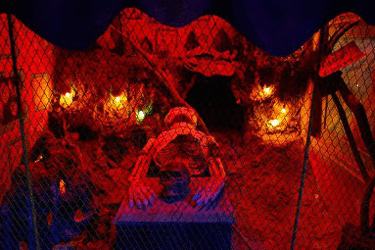
ガイコツが起き上がるヤツ。
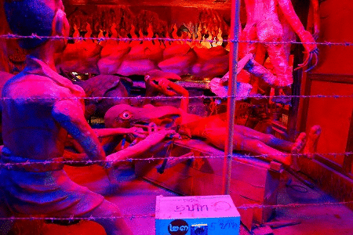
お馴染みのノコギリの刑。
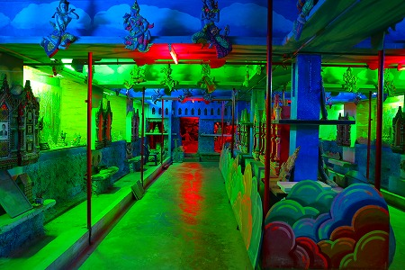
コの字型の通路の内側は亡くなった人の写真などが飾られており、慰霊スペースとなっている。
が、いかんせんこんな雰囲気。
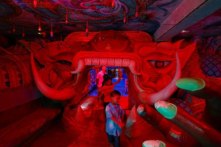
で、地獄から生還した。
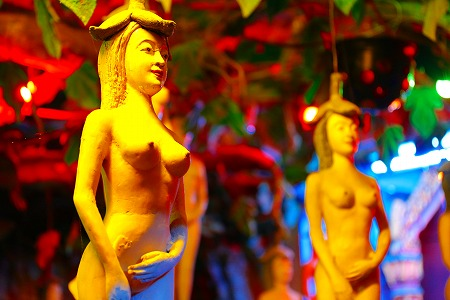
最後は美女のなる樹コーナー。
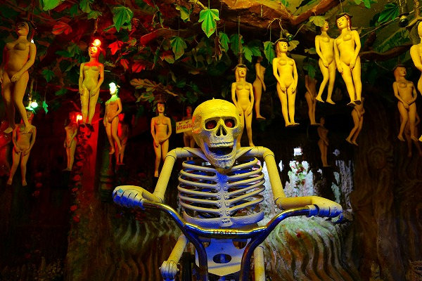
コインを入れるとタイっぽい音楽が流れ、骸骨が自転車をこぎ、噴水が出る。
何度見てもここの美女のなる樹+自転車骸骨は素晴らしい！
てなわけで地下スペースのパトロール完了。
相変わらずイイ感じに力が抜けていて、楽しい地獄だった。
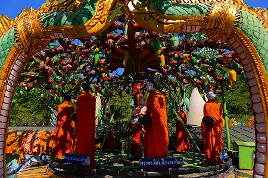
本堂前にはお坊さんの人形がグルグル回って托鉢をしていた。
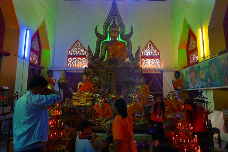
本堂。
大勢の人が参拝に来ていた。
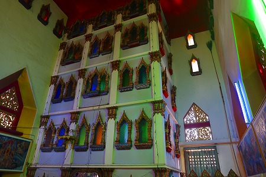
本堂の内部は吹き抜けになっており、その中に怪しげな部屋がある。
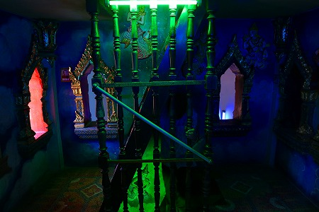
中は狭い階段室になっている。
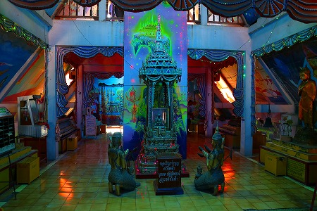
上ると、そこは屋根裏部屋のようなスペース。
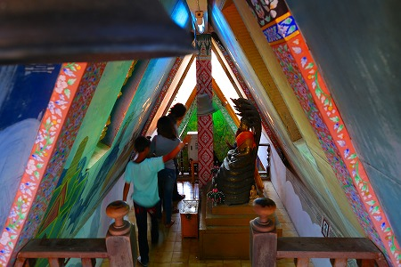
一番上は狭いけど皆さん楽しそうに登っていた。
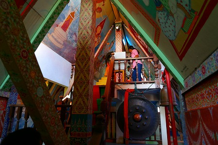
隅から隅まで楽しませてくれる素敵な寺だ。
次のパトロールへGO！